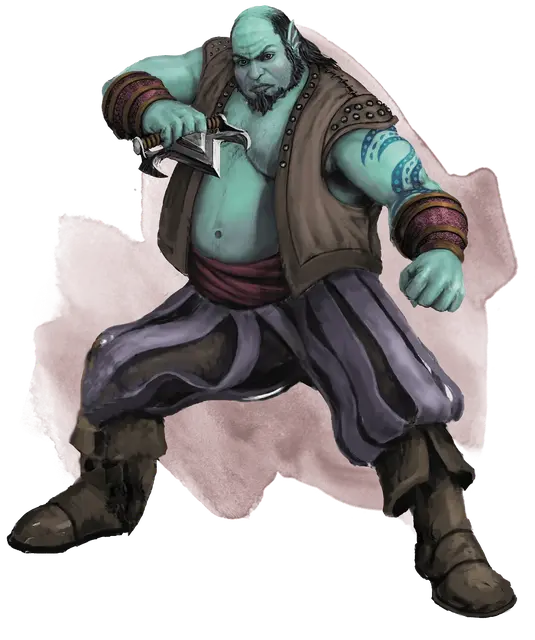

Глубинник
Fathomer
Средний Гуманоид (Человек), нейтрально-злой

Класс Доспеха 10 (13 с доспехами мага)
Хиты 52 (8к8 + 16)
Скорость 30 футов
| мод | спас | ||
|---|---|---|---|
| СИЛ | 14 | +2 | +2 |
| ЛОВ | 11 | +0 | +0 |
| ТЕЛ | 14 | +2 | +2 |
| мод | спас | ||
|---|---|---|---|
| ИНТ | 11 | +0 | +0 |
| МДР | 11 | +0 | +0 |
| ХАР | 15 | +2 | +2 |
Навыки Восприятие +4, Магия +2, Скрытность +4
Чувства пассивное Восприятие 14
Языки Общий, Акван
Опасность 2 (450 опыта)
Бонус мастерства +2
Особенности
Доспехи Ольгидры (только в форме человека). Глубинник может накладывать заклинание доспехи мага [mage armor] не тратя ячеек заклинаний.
Использование заклинаний (только в форме человека). Глубинник считается заклинателем 5-го уровня. Его базовой характеристикой является Харизма (Сл спасброска от заклинаний 12, +4 к попаданию атаками заклинаниями). У него 2 ячейки заклинаний 3-го уровня, которые он восстанавливает после короткого или продолжительного отдыха, и он знает следующие заклинания колдуна:
• Заговоры: леденящее прикосновение [chill touch], мистический заряд [eldritch blast], волшебная рука [mage hand]
• 1 уровень: доспех Агатиса [armor of Agathys], поспешное отступление [expeditious retreat], сглаз [hex]
• 2 уровень: невидимость [invisibility]
• 3 уровень: прикосновение вампира [vampiric touch]
Смена формы (2/день). Глубинник может действием превратиться в змею Среднего размера, состоящую из воды, или принять свой истинный облик. Всё несомое и носимое им снаряжение также превращается и становится недоступно для использования до возвращения в истинную форму.
Глубинник автоматически возвращается в истинную форму спустя 4 часа, если не потратит ещё одно использование этого умения. Он принимает свой истинный облик, если умирает или падает без сознания.
Пока глубинник находится в форме змеи, он получает скорость плавания 40 фт., способность дышать под водой, иммунитет к урону ядом, а также сопротивление к урону огнём, и к дробящему, колющему и рубящему урону от немагического оружия. Кроме того он получает иммунитет к следующим состояниям: истощение, захват, паралич, отравление, опутанный, сбивание с ног и не может упасть без сознания. Змея может входить в пространство других существ и оставаться там. Кроме того, если вода может проходить сквозь пространство, змея может пройти через него, не протискиваясь.
Действия
Сжимание (только в форме змеи). Рукопашная атака оружием: +4 к попаданию, досягаемость 5 фт., одна цель. Попадание: дробящий урон 9 (2к6 + 2) и цель размером не больше Среднего становится схваченной (Сл высвобождения 12). До тех пор, пока цель схвачена, она остаётся опутанной, и глубинник не может сжимать другую цель.
Кинжал (только в форме человека). Рукопашная или дальнобойная атака оружием: +4 к попаданию, досягаемость 5 фт., или дальность 20/60 фт., одна цель. Попадание: колющий урон 4 (1к4 + 2).
Описание
Глубинники — это культисты, заключившие договор с Ольгидрой, Принцессой Злой Воды. В дополнение к колдовским способностям фатомеры умеют превращать свои тела в воду, принимая змееподобный облик. В форме водяной змеи глубинники (так же, как и прочие элементальные существа) получают сопротивление ко многим видам урона, а также могут захватывать врагов и душить их своими водными телами.
В культе воды глубинники чаще всего служат шпионами, лазутчиками или убийцами, поскольку могут проскользнуть через закрытую дверь или пройти сквозь решётки без особых усилий.